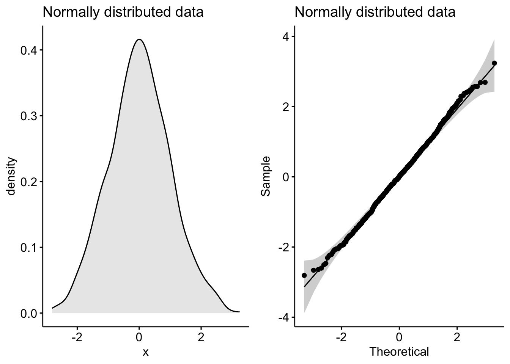
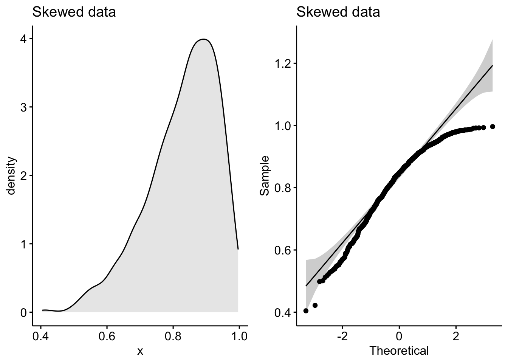
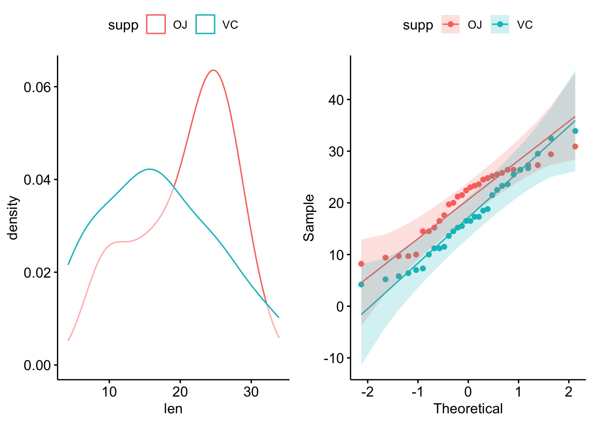
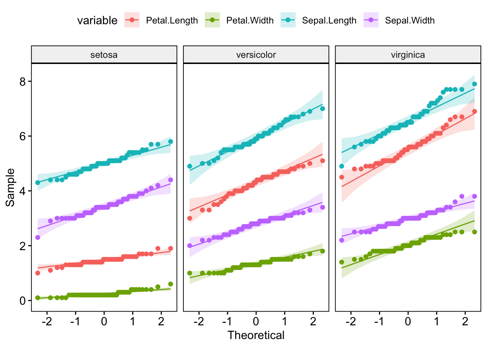

Toggle the code
library(librarian)
pkg <- c("ggpubr", "cowplot", "tidyverse", "rstatix")
shelf(pkg)
rm(pkg)Many a statistical test assume the data follows a normal (AKA Gaussian) distribution. These tests are called parametric tests as their validity depends on the distribution of the data.
It is therefore important to access the normality of data if we wish to use parametric tests.
Note that the central limit theorem tells us that with a large enough sample size (~>40), data will trend to be normally distributed, so one can often get away with using parametric tests in these cases.
Let’s start by loading our packages. We’ll use ggpubr as it makes nice plots, and has a handy function for Q-Q plots, and cowplot for arranging plots into grids.
rstatix is for pipe-friendly versions of the base R stat functions, and tidyverse for data manipulation.
Note that librarian is a neat package for automatically installing and loading packages!
library(librarian)
pkg <- c("ggpubr", "cowplot", "tidyverse", "rstatix")
shelf(pkg)
rm(pkg)One the first and best places to start when assessing normality is to simply plot the data!
We can use the base R rnorm function to generate a random set of normal distributed values for demonstration:
## set a seed so our "random" numbers don't change
set.seed(123)
## generate a random normal distribution
normal_distribution <- rnorm(1000)
## make a density plot
p1 <- ggdensity(
normal_distribution,
fill = "lightgray",
title = "Normally distributed data"
)
## make a Q-Q plot
p2 <- ggqqplot(normal_distribution, title = "Normally distributed data")
## arrange plots into a grid
plot_grid(p1, p2)
Notice the classic bell-shaped curve in the density plot and the nice straight line in the Q-Q plot? These are the hallmarks of a normally distributed dataset.
Now let’s see what a skewed distribution looks like:
skewed_data <- rbeta(1000, 10, 2)
p1 <- ggdensity(skewed_data, fill = "lightgray", title = "Skewed data")
p2 <- ggqqplot(skewed_data, title = "Skewed data")
plot_grid(p1, p2)
See how the density plot “leans over” to the right and the points in the Q-Q plot curve away from our theoretical gray lines?
Q-Q plots (or quantile-quantile plots) draw the correlation between a given sample and the normal distribution. A 45-degree reference line is also plotted. In a QQ plot, each observation is plotted as a single dot. If the data are normal, the dots should form a straight line.
In cases of strong skew, like the data above, visual inspection if fine, but in cases of weaker skew it can be more ambiguous.
So another method is to use a significance test comparing the sample distribution to a normal one in order to ascertain any deviation from normality.
There are a few methods to evaluate normality, including the Kolmogorov-Smirnov (K-S) normality test and the Shapiro-Wilk’s test.
Shapiro-Wilk’s method is better powered than K-S and so tends to be the recommend approach.
Like most common statistical tests, R has handy included function for computing them:
shapiro.test(normal_distribution)
Shapiro-Wilk normality test
data: normal_distribution
W = 0.9983761923, p-value = 0.476468592shapiro.test(skewed_data)
Shapiro-Wilk normality test
data: skewed_data
W = 0.9487249143, p-value < 2.220446e-16As we can see, the normally distributed data has a high p-value, tell us it is likely to be normally distributed (shocking I know!). By contrast, the skewed data has a very low p-value, indicating it is unlikely to be normally distributed (also shocking!).
If we have two independent groups, we’d want to check their normality separately. If the underlying distributions are truly different, then they wouldn’t be normally distributed if measured together (it’d be bimodal in the case of 2 groups).
This is nice and easy to do with long-format data. We’ll use the built-in ToothGrowth dataset to demonstrate:
## display some random rows of ToothGrowth
ToothGrowth %>%
sample_n_by(supp, dose, size = 1)# A tibble: 6 × 3
len supp dose
<dbl> <fct> <dbl>
1 21.5 OJ 0.5
2 23.6 OJ 1
3 26.4 OJ 2
4 5.2 VC 0.5
5 16.5 VC 1
6 23.6 VC 2 ## check normality for long-format grouped data
p1 <- ggdensity(ToothGrowth, x = "len", color = "supp")
p2 <- ggqqplot(ToothGrowth, x = "len", color = "supp")
plot_grid(p1, p2)
ToothGrowth %>%
group_by(supp) %>%
shapiro_test(len)# A tibble: 2 × 4
supp variable statistic p
<fct> <chr> <dbl> <dbl>
1 OJ len 0.918 0.0236
2 VC len 0.966 0.428 To apply Shapiro-Wilk’s across columns is easy enough. We’ll use another built-in dataset, iris, to demonstrate with wide-format data:
## display some rows of iris
iris %>%
sample_n_by(Species, size = 1)# A tibble: 3 × 5
Sepal.Length Sepal.Width Petal.Length Petal.Width Species
<dbl> <dbl> <dbl> <dbl> <fct>
1 4.7 3.2 1.6 0.2 setosa
2 5.5 2.3 4 1.3 versicolor
3 7.2 3.6 6.1 2.5 virginica ## with column names
iris %>%
group_by(Species) %>%
shapiro_test(Sepal.Length, Petal.Length)# A tibble: 6 × 4
Species variable statistic p
<fct> <chr> <dbl> <dbl>
1 setosa Petal.Length 0.955 0.0548
2 setosa Sepal.Length 0.978 0.460
3 versicolor Petal.Length 0.966 0.158
4 versicolor Sepal.Length 0.978 0.465
5 virginica Petal.Length 0.962 0.110
6 virginica Sepal.Length 0.971 0.258 But for the plots, it’s a lot easier to pivot to long format:
iris_long <- iris %>%
pivot_longer(Sepal.Length:Petal.Width, names_to = "variable")
ggdensity(iris_long, x = "value", color = "variable", facet.by = "Species")
ggqqplot(iris_long, x = "value", color = "variable", facet.by = "Species")
I’d recommend checking out the principals of tidy data if you’re unsure of how best to structure your own data.
Hopefully this gives you a sense of how to check for normality. Note, that even in cases where it is fairly obvious the data is skewed, it can be worth doing a test like Shapiro-Wilk’s, if only to provide a formal justification for the non-parametric tests that you subsequently use.
Also note that the Shapiro-Wilk test become sensitive to small deviations from normality at larger sample sizes (>50), so it’s generally good to check the visualisations and the test.
Finally, if you have a larger sample size and still in doubt about the normality of your data, you can just use non-parametric stats to be safe. You’ll lose a little power, but so long as the sample size is large enough, it’s unlikely to be critical.